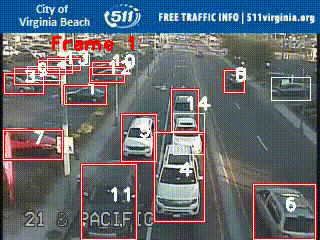
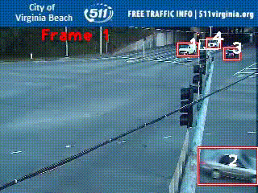
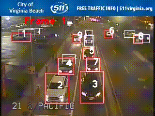
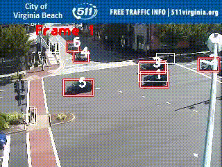
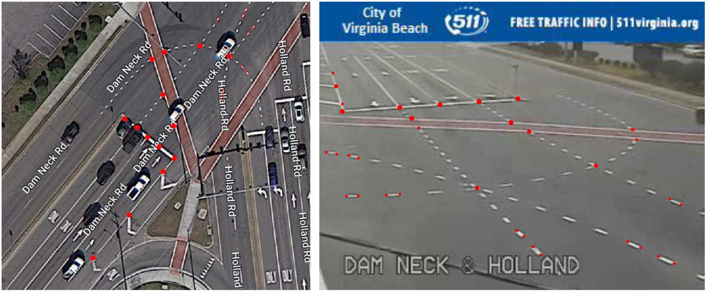
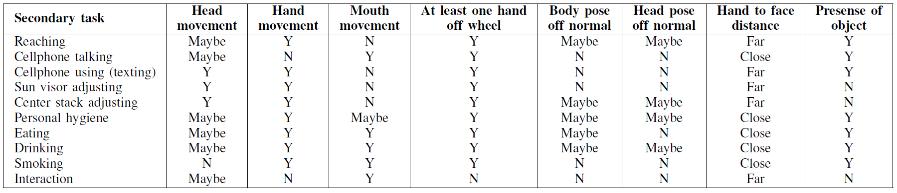

Method
<<<<<<< HEADVideo Swin-B Transformer
=======Traffic Participant Detection and Tracking




We use YOLOv7 for object detection and BoT-SORT for multi-object tracking, which jointly provide accurate detection, association, and re-identification of the traffic participants.
Homography Transformation
>>>>>>> updated_site
<<<<<<< HEAD Our model is based on the Video Swin Transformer, a spatiotemporal extension of the Swin Transformer designed for video understanding tasks such as action recognition. We use the Swin-B (Base) variant for a strong balance between accuracy and computational efficiency, initialized with weights pre-trained on the Kinetics-400 dataset. The architecture processes videos as 3D patches and applies window-based and shifted window self-attention across four hierarchical stages to capture both spatial and temporal context. The pre-trained classifier is replaced and the entire network is fine-tuned on our dataset for the task of video classification.
Visual Dictionary for Human Action

We build on the concept of the Visual Dictionary of Human Action (VDHA) to represent complex human activities as structured combinations of interpretable visual attributes. VDHA models an action as a unique signature composed of micro-actions (e.g., head, hand, and mouth movements), spatial relations between body parts (e.g., body and head pose, face–hand distance), and interactions with surrounding objects (e.g., hands on the wheel, object presence). For driving scenarios, these attributes distinguish secondary behaviors from normal driving actions using simple semantic values (Yes/No/Maybe), enabling systematic definition and analysis of fine-grained behaviors. This structured representation supports automated discovery and interpretability, and helps explain where and why the model attends to specific regions and frames when recognizing actions.